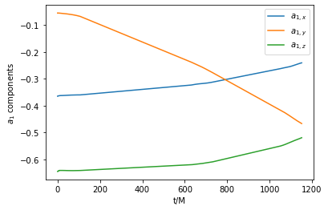

Compact Objects
[1]:
from mayawaves.coalescence import Coalescence
from mayawaves.compactobject import CompactObject
import matplotlib.pyplot as plt
Create a Coalescence object using the simulation h5 file
[2]:
example_h5_filepath = "../example_simulation/D11_q5_a1_-0.362_-0.0548_-0.64_a2_-0.0013_0.001_-0.0838_m533.33.h5"
[3]:
coalescence = Coalescence(example_h5_filepath)
Obtain the CompactObject objects associated with the larger object (primary) and smaller object (secondary)
[4]:
primary_compact_object = coalescence.primary_compact_object
secondary_compact_object = coalescence.secondary_compact_object
Obtain trajectory data
[5]:
time, primary_position = primary_compact_object.position_vector
time, secondary_position = secondary_compact_object.position_vector
[6]:
plt.plot(primary_position[:, 0], primary_position[:, 1])
plt.plot(secondary_position[:, 0], secondary_position[:, 1])
plt.gca().set_aspect('equal', adjustable='box')
plt.xlabel('x')
plt.ylabel('y')
plt.show()
Obtain initial data such as masses and spins
[7]:
print(f"initial dimensionless spin of primary BH: {primary_compact_object.initial_dimensionless_spin}")
print(f"initial dimensionless spin of secondary BH: {secondary_compact_object.initial_dimensionless_spin}")
print(f"initial dimensional spin of primary BH: {primary_compact_object.initial_dimensional_spin}")
print(f"initial dimensional spin of secondary BH: {secondary_compact_object.initial_dimensional_spin}")
initial dimensionless spin of primary BH: [-0.36451101 -0.05518085 -0.64443774]
initial dimensionless spin of secondary BH: [-0.00129516 0.00100747 -0.08374188]
initial dimensional spin of primary BH: [-0.25138458 -0.0380554 -0.4444357 ]
initial dimensional spin of secondary BH: [-3.59770435e-05 2.79857020e-05 -2.32619237e-03]
[8]:
print(f"initial horizon mass of primary BH: {primary_compact_object.initial_horizon_mass}")
print(f"initial horizon mass of secondary BH: {secondary_compact_object.initial_horizon_mass}")
print(f"initial irreducible mass of primary BH: {primary_compact_object.initial_irreducible_mass}")
print(f"initial irreducible mass of secondary BH: {secondary_compact_object.initial_irreducible_mass}")
initial horizon mass of primary BH: 0.8304509510300787
initial horizon mass of secondary BH: 0.16666770757317356
initial irreducible mass of primary BH: 0.7588330514
initial irreducible mass of secondary BH: 0.166521231
Obtain timeseries data for parameters such as spin
Note that for many systems, the initial horizons are tracked all the way through merger after which the values are no longer reliable.
[9]:
time, primary_spin = primary_compact_object.dimensionless_spin_vector
[10]:
plt.plot(time, primary_spin[:, 0], label=r'$a_{1, x}$')
plt.plot(time, primary_spin[:, 1], label=r'$a_{1, y}$')
plt.plot(time, primary_spin[:, 2], label=r'$a_{1, z}$')
plt.legend()
plt.xlabel('t/M')
plt.ylabel(f'$a_{1}$ components')
plt.show()

[11]:
time, secondary_spin = secondary_compact_object.dimensionless_spin_vector
[12]:
plt.plot(time, secondary_spin[:, 0], label=r'$a_{2, x}$')
plt.plot(time, secondary_spin[:, 1], label=r'$a_{2, y}$')
plt.plot(time, secondary_spin[:, 2], label=r'$a_{2, z}$')
plt.legend()
plt.xlabel('t/M')
plt.ylabel(f'$a_{2}$ components')
plt.show()
You can access any data that is available for the given compact object
[13]:
available_columns = primary_compact_object.available_data_columns
print(available_columns)
[<Column.ITT: 1>, <Column.TIME: 2>, <Column.X: 3>, <Column.Y: 4>, <Column.Z: 5>, <Column.VX: 6>, <Column.VY: 7>, <Column.VZ: 8>, <Column.AX: 9>, <Column.AY: 10>, <Column.AZ: 11>, <Column.SX: 12>, <Column.SY: 13>, <Column.SZ: 14>, <Column.PX: 15>, <Column.PY: 16>, <Column.PZ: 17>, <Column.MIN_RADIUS: 18>, <Column.MAX_RADIUS: 19>, <Column.MEAN_RADIUS: 20>, <Column.QUADRUPOLE_XX: 21>, <Column.QUADRUPOLE_XY: 22>, <Column.QUADRUPOLE_XZ: 23>, <Column.QUADRUPOLE_YY: 24>, <Column.QUADRUPOLE_YZ: 25>, <Column.QUADRUPOLE_ZZ: 26>, <Column.MIN_X: 27>, <Column.MAX_X: 28>, <Column.MIN_Y: 29>, <Column.MAX_Y: 30>, <Column.MIN_Z: 31>, <Column.MAX_Z: 32>, <Column.XY_PLANE_CIRCUMFERENCE: 33>, <Column.XZ_PLANE_CIRCUMFERENCE: 34>, <Column.YZ_PLANE_CIRCUMFERENCE: 35>, <Column.RATIO_OF_XZ_XY_PLANE_CIRCUMFERENCES: 36>, <Column.RATIO_OF_YZ_XY_PLANE_CIRCUMFERENCES: 37>, <Column.AREA: 38>, <Column.M_IRREDUCIBLE: 39>, <Column.AREAL_RADIUS: 40>, <Column.EXPANSION_THETA_L: 41>, <Column.INNER_EXPANSION_THETA_N: 42>, <Column.PRODUCT_OF_THE_EXPANSIONS: 43>, <Column.MEAN_CURVATURE: 44>, <Column.GRADIENT_OF_THE_AREAL_RADIUS: 45>, <Column.GRADIENT_OF_THE_EXPANSION_THETA_L: 46>, <Column.GRADIENT_OF_THE_INNER_EXPANSION_THETA_N: 47>, <Column.GRADIENT_OF_THE_PRODUCT_OF_THE_EXPANSIONS: 48>, <Column.GRADIENT_OF_THE_MEAN_CURVATURE: 49>, <Column.MINIMUM_OF_THE_MEAN_CURVATURE: 50>, <Column.MAXIMUM_OF_THE_MEAN_CURVATURE: 51>, <Column.INTEGRAL_OF_THE_MEAN_CURVATURE: 52>]
[14]:
data = primary_compact_object.get_data_from_columns([CompactObject.Column.TIME, CompactObject.Column.XY_PLANE_CIRCUMFERENCE])
time = data[:, 0]
circumference = data[:, 1]
plt.plot(time, circumference)
plt.xlabel('t/M')
plt.ylabel('circumference in xy plane')
plt.show()
Close the Coalescence object to close the associated h5 file
[15]:
coalescence.close()
[ ]: